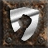

 Smite 93.94% (31.0)
Popular builds include:
52.38% of Paladin's invest heavily in Holy Bolt, Fist of the Heavens, Sanctuary, Holy Shield, Holy Shock
25.40% of Paladin's invest heavily in Blessed Hammer, Vigor, Blessed Aim, Concentration, Holy Shield
12.70% of Paladin's invest heavily in Salvation, Holy Shock, Fanaticism, Resist Fire, Resist Lightning
9.52% of Paladin's invest heavily in Dashing Strike, Sanctuary, Cleansing, Holy Shield, Holy Bolt
Skills: Holy Bolt:20, Fist of the Heavens:20, Holy Shock:20, Salvation:20, Conviction:9, Sacrifice:1, Smite:1, Zeal:1, Charge:1, Vengeance:1, Blessed Hammer:1, Absolution:1, Holy Shield:1, Might:1, Holy Fire:1, Precision:1, Holy Freeze:1, Sanctuary:1, Prayer:1, Defiance:1, Cleansing:1, Vigor:1, Redemption:1
Equipment: body: Enigma x1, gloves: Magefist x1, ring: Skull Spiral x1, ring: Shadow Finger x1, amulet: Mara's Kaleidoscope x1, belt: Arachnid Mesh x1, helmet: Griffon's Eye x1, boots: Silkweave x1, Left hand: Call to Arms x1, Left hand: Heart of the Oak x1, Offhand: Medusa's Gaze x1, Offhand: Herald of Zakarum x1
Mercenary: Act 3 Eastern Sorceror - 2693, Skin of the Vipermagi, Silence, Gerke's Sanctuary
Skills: Holy Bolt:20, Fist of the Heavens:20, Holy Shock:20, Sanctuary:20, Holy Shield:7, Sacrifice:1, Smite:1, Zeal:1, Charge:1, Vengeance:1, Blessed Hammer:1, Absolution:1, Dashing Strike:1, Might:1, Holy Fire:1, Precision:1, Holy Freeze:1, Conviction:1, Prayer:1, Defiance:1, Cleansing:1, Vigor:1, Redemption:1, Salvation:1
Equipment: helmet: Crown of Ages x1, gloves: Magefist x1, body: Enigma x1, boots: Aldur's Advance x1, belt: Arachnid Mesh x1, ring: Ring of the Apprentice x1, ring: Eagle Master x1, amulet: Corruption Collar x1, Left hand: Call to Arms x1, Left hand: Heart of the Oak x1, Offhand: Spirit x1, Offhand: Herald of Zakarum x1
Mercenary: Act 2 Desert Mercenary - Steel Shade, Guardian Angel, The Reaper's Toll
Skills: Holy Bolt:20, Fist of the Heavens:20, Holy Shock:20, Sanctuary:17, Redemption:4, Holy Shield:3, Sacrifice:1, Smite:1, Zeal:1, Charge:1, Vengeance:1, Blessed Hammer:1, Absolution:1, Dashing Strike:1, Might:1, Holy Fire:1, Precision:1, Holy Freeze:1, Conviction:1, Prayer:1, Defiance:1, Cleansing:1, Vigor:1, Meditation:1, Salvation:1
Equipment: gloves: Magefist x1, body: Skin of the Vipermagi x1, amulet: Order Heart x1, belt: Arachnid Mesh x1, ring: The Stone of Jordan x1, ring: Manald Heal x1, helmet: Harlequin Crest x1, boots: Silkweave x1, Left hand: Heart of the Oak x1, Offhand: Spirit x1
Mercenary: Act 2 Desert Mercenary - Treachery, Steel Shade, Obedience
Skills: Holy Bolt:20, Holy Shield:20, Fist of the Heavens:20, Sanctuary:20, Sacrifice:1, Smite:1, Zeal:1, Charge:1, Vengeance:1, Blessed Hammer:1, Absolution:1, Dashing Strike:1, Might:1, Holy Fire:1, Precision:1, Holy Freeze:1, Prayer:1, Defiance:1, Cleansing:1, Vigor:1, Redemption:1, Salvation:1
Equipment: gloves: Magefist x1, belt: String of Ears x1, body: Enigma x1, helmet: Harlequin Crest x1, amulet: Rose Branded Amulet of the Apprentice x1, ring: Death Whorl x1, ring: Raven Frost x1, boots: Aldur's Advance x1, Left hand: Call to Arms x1, Left hand: Heart of the Oak x1, Offhand: Spirit x2
Mercenary: Act 2 Desert Mercenary - Tal Rasha's Horadric Crest, Treachery, Insight
Skills: Holy Bolt:20, Fist of the Heavens:20, Holy Shock:20, Sanctuary:20, Holy Shield:4, Sacrifice:1, Smite:1, Zeal:1, Charge:1, Vengeance:1, Blessed Hammer:1, Absolution:1, Might:1, Holy Fire:1, Precision:1, Holy Freeze:1, Conviction:1, Prayer:1, Defiance:1, Cleansing:1, Vigor:1, Redemption:1, Salvation:1
Equipment: boots: War Traveler x1, helmet: Harlequin Crest x1, gloves: Magefist x1, ring: Skull Spiral x1, ring: Raven Frost x1, body: Enigma x1, belt: Arachnid Mesh x1, amulet: Rose Branded Amulet x1, Left hand: Holy Thunder x1, Left hand: Heart of the Oak x1, Offhand: Spirit x2
Mercenary: Act 2 Desert Mercenary - Tal Rasha's Horadric Crest, Treachery, Insight
Skills: Holy Bolt:20, Fist of the Heavens:20, Sanctuary:20, Redemption:7, Holy Freeze:5, Sacrifice:1, Smite:1, Zeal:1, Charge:1, Vengeance:1, Blessed Hammer:1, Absolution:1, Holy Shield:1, Might:1, Holy Fire:1, Precision:1, Prayer:1, Defiance:1, Cleansing:1, Vigor:1
Equipment: helmet: Harlequin Crest x1, gloves: Magefist x1, belt: Arachnid Mesh x1, boots: War Traveler x1, amulet: Mara's Kaleidoscope x1, body: Smoke x1, ring: Dwarf Star x1, ring: Nagelring x1, Left hand: Gnarled Staff of Teleportation x1, Left hand: Spirit x1, Offhand: Spirit x1
Mercenary: Act 2 Desert Mercenary - Black Hades, Tal Rasha's Horadric Crest, Insight
Skills: Fist of the Heavens:20, Sanctuary:20, Conviction:19, Holy Bolt:18, Holy Shield:4, Sacrifice:1, Smite:1, Zeal:1, Charge:1, Vengeance:1, Blessed Hammer:1, Absolution:1, Might:1, Holy Fire:1, Precision:1, Holy Freeze:1, Prayer:1, Defiance:1, Cleansing:1, Vigor:1, Meditation:1, Salvation:1
Equipment: gloves: Magefist x1, body: Enigma x1, belt: Arachnid Mesh x1, ring: Entropy Master x1, ring: Stone Finger x1, helmet: Harlequin Crest x1, boots: War Traveler x1, amulet: Hawk Branded Amulet of Strength x1, Left hand: Heart of the Oak x1, Offhand: Spirit x1
Mercenary: Act 2 Desert Mercenary - Steel Shade, Leviathan, Infinity
Skills: Holy Bolt:20, Fist of the Heavens:20, Sanctuary:20, Salvation:17, Holy Shield:6, Conviction:4, Sacrifice:1, Smite:1, Zeal:1, Charge:1, Vengeance:1, Blessed Hammer:1, Absolution:1, Might:1, Holy Fire:1, Precision:1, Holy Freeze:1, Holy Shock:1, Prayer:1, Defiance:1
Equipment: body: Skin of the Vipermagi x1, amulet: Rose Branded Amulet x1, boots: Tearhaunch x1, belt: Beast Harness x1, ring: PlagueRI Grasp x1, ring: Garnet Ring of Sorcery x1, helmet: Rose Branded Circlet x1, gloves: Chance Guards x1, Left hand: Spirit x1, Offhand: Spirit x1
Mercenary: Act 2 Desert Mercenary - Tal Rasha's Horadric Crest, Shaftstop, Insight
Skills: Holy Bolt:20, Fist of the Heavens:20, Sanctuary:20, Holy Shield:15, Vigor:7, Dashing Strike:2, Sacrifice:1, Smite:1, Zeal:1, Charge:1, Vengeance:1, Blessed Hammer:1, Absolution:1, Might:1, Holy Fire:1, Precision:1, Holy Freeze:1, Prayer:1, Defiance:1, Cleansing:1, Redemption:1, Salvation:1
Equipment: body: Sigon's Shelter x1, helmet: Sigon's Visor x1, boots: Sigon's Sabot x1, belt: Sigon's Wrap x1, gloves: Sigon's Gage x1
Mercenary: Act 2 Desert Mercenary - No equipment
Skills: Holy Bolt:20, Fist of the Heavens:20, Holy Shock:20, Sanctuary:20, Holy Shield:2, Sacrifice:1, Smite:1, Zeal:1, Charge:1, Vengeance:1, Blessed Hammer:1, Absolution:1, Might:1, Holy Fire:1, Precision:1, Holy Freeze:1, Conviction:1, Prayer:1, Defiance:1, Cleansing:1, Vigor:1, Redemption:1
Equipment:
Mercenary: Act 2 Desert Mercenary - Tal Rasha's Horadric Crest, Leviathan, Insight
Skills: Holy Bolt:20, Fist of the Heavens:20, Sanctuary:20, Redemption:15, Holy Shield:9, Sacrifice:1, Smite:1, Zeal:1, Charge:1, Vengeance:1, Blessed Hammer:1, Absolution:1, Might:1, Holy Fire:1, Precision:1, Holy Freeze:1, Holy Shock:1, Prayer:1, Defiance:1, Cleansing:1, Vigor:1
Equipment: amulet: Rose Branded Amulet x1, ring: Raven Frost x1, ring: Nagelring x1, gloves: Trang-Oul's Claws x1, helmet: Harlequin Crest x1, boots: Aldur's Advance x1, belt: Credendum x1, body: Enigma x1, Left hand: Edge x1, Left hand: Heart of the Oak x1, Offhand: Spirit x1
Mercenary: Act 2 Desert Mercenary - Vampire Gaze, Treachery, Insight
Skills: Holy Bolt:20, Holy Shield:20, Fist of the Heavens:20, Sanctuary:20, Conviction:2, Sacrifice:1, Smite:1, Zeal:1, Charge:1, Vengeance:1, Blessed Hammer:1, Absolution:1, Might:1, Holy Fire:1, Precision:1, Holy Freeze:1, Prayer:1, Defiance:1, Cleansing:1, Vigor:1, Redemption:1, Salvation:1
Equipment: ring: Bone Spiral x1, ring: Raven Circle x1, body: Skin of the Vipermagi x1, belt: Verdungo's Hearty Cord x1, gloves: Trang-Oul's Claws x1, helmet: Harlequin Crest x1, boots: Aldur's Advance x1, amulet: Order Necklace x1, Left hand: Heart of the Oak x1, Offhand: Spirit x1
Mercenary: Act 2 Desert Mercenary - Spirit Forge, Crown of Ages, Obedience
Skills: Holy Bolt:20, Fist of the Heavens:20, Holy Shock:20, Sanctuary:19, Sacrifice:1, Smite:1, Zeal:1, Charge:1, Vengeance:1, Blessed Hammer:1, Absolution:1, Holy Shield:1, Might:1, Holy Fire:1, Precision:1, Holy Freeze:1, Conviction:1, Prayer:1, Defiance:1, Cleansing:1, Vigor:1, Redemption:1, Salvation:1
Equipment: ring: Blood Grip x1, ring: Viper Master x1, helmet: Glyph Horn x1, amulet: Rose Branded Amulet of Luck x1, Left hand: Battle Staff of Teleportation x1, gloves: Loath Finger x1, Offhand: Spirit x1
Mercenary: Act 3 Eastern Sorceror - No equipment
Skills: Holy Bolt:20, Holy Shield:20, Fist of the Heavens:20, Sanctuary:20, Sacrifice:1, Smite:1, Zeal:1, Charge:1, Vengeance:1, Blessed Hammer:1, Absolution:1, Dashing Strike:1, Might:1, Holy Fire:1, Precision:1, Holy Freeze:1, Conviction:1, Prayer:1, Defiance:1, Cleansing:1, Vigor:1, Redemption:1
Equipment:
Mercenary: Act 2 Desert Mercenary - Treachery, Crown of Thieves, Insight
Skills: Holy Bolt:20, Holy Shield:20, Fist of the Heavens:20, Sanctuary:20, Defiance:5, Sacrifice:1, Smite:1, Zeal:1, Charge:1, Vengeance:1, Blessed Hammer:1, Absolution:1, Might:1, Holy Fire:1, Precision:1, Holy Freeze:1, Prayer:1, Salvation:1
Equipment: ring: Viper Eye x1, ring: PlagueRI Touch x1, gloves: Gale Hand x1, amulet: Rose Branded Amulet of the Squid x1, belt: Goldwrap x1, body: Duriel's Shell x1, helmet: Hailstone Crest x1, boots: Silkweave x1, Left hand: Gnarled Staff of Teleportation x1, Left hand: Spirit x1, Offhand: Spirit x1
Mercenary: Act 2 Desert Mercenary - Haemosu's Adamant, Guillaume's Face, Insight
Skills: Holy Bolt:20, Fist of the Heavens:20, Sanctuary:20, Holy Shock:17, Sacrifice:1, Smite:1, Zeal:1, Charge:1, Vengeance:1, Blessed Hammer:1, Absolution:1, Holy Shield:1, Might:1, Holy Fire:1, Precision:1, Holy Freeze:1, Conviction:1, Prayer:1, Defiance:1, Cleansing:1, Vigor:1, Redemption:1
Equipment:
Mercenary: Act 2 Desert Mercenary - Tal Rasha's Horadric Crest, Duriel's Shell, Insight
Skills: Holy Bolt:20, Fist of the Heavens:20, Sanctuary:20, Holy Shield:10, Prayer:5, Sacrifice:1, Smite:1, Zeal:1, Charge:1, Vengeance:1, Blessed Hammer:1, Absolution:1, Might:1, Holy Fire:1, Precision:1, Holy Freeze:1, Defiance:1, Cleansing:1, Vigor:1, Redemption:1
Equipment: amulet: Mara's Kaleidoscope x1, gloves: Trang-Oul's Claws x1, boots: Aldur's Advance x1, belt: Verdungo's Hearty Cord x1, ring: Raven Frost x1, ring: Dwarf Star x1, helmet: Harlequin Crest x1, body: Enigma x1, Left hand: Heart of the Oak x1, Offhand: Spirit x1
Mercenary: Act 2 Desert Mercenary - Shaftstop, Steel Shade, The Reaper's Toll
Skills: Holy Bolt:20, Fist of the Heavens:20, Sanctuary:20, Holy Shield:18, Sacrifice:1, Smite:1, Zeal:1, Charge:1, Vengeance:1, Blessed Hammer:1, Absolution:1, Might:1, Holy Fire:1, Precision:1, Holy Freeze:1, Conviction:1, Prayer:1, Defiance:1, Cleansing:1, Vigor:1, Redemption:1, Salvation:1
Equipment:
Mercenary: Act 2 Desert Mercenary - Duriel's Shell, Rockstopper, Insight
Skills: Holy Bolt:20, Fist of the Heavens:20, Sanctuary:20, Holy Shield:16, Sacrifice:1, Smite:1, Zeal:1, Charge:1, Vengeance:1, Blessed Hammer:1, Absolution:1, Might:1, Holy Fire:1, Precision:1, Holy Freeze:1, Prayer:1, Defiance:1, Cleansing:1, Vigor:1, Redemption:1
Equipment: body: Smoke x1, ring: Garnet Ring of Thawing x1, ring: Ring of Wizardry x1, amulet: Bitter Heart x1, belt: Loath Chain x1, boots: Tearhaunch x1, gloves: Trang-Oul's Claws x1, helmet: Loath Shell x1, Left hand: Dragon's War Staff of Teleportation x1, Left hand: Spirit x1, Offhand: Spirit x1
Mercenary: Act 2 Desert Mercenary - Cure, Smoke, Insight
Skills: Holy Bolt:20, Holy Shield:20, Fist of the Heavens:20, Holy Shock:5, Redemption:4, Charge:2, Sacrifice:1, Smite:1, Zeal:1, Vengeance:1, Blessed Hammer:1, Absolution:1, Dashing Strike:1, Might:1, Holy Fire:1, Precision:1, Holy Freeze:1, Sanctuary:1, Conviction:1, Prayer:1, Defiance:1, Cleansing:1, Vigor:1, Salvation:1
Equipment: helmet: Peasant Crown x1, gloves: Magefist x1, ring: Order Hold x1, boots: Waterwalk x1, body: Tal Rasha's Guardianship x1, amulet: Scintillating Amulet of the Apprentice x1, belt: Arachnid Mesh x1, Left hand: Spirit x1, Offhand: Spirit x1
Mercenary: Act 2 Desert Mercenary - Atma's Wail, Helm, Insight
Skills: Holy Bolt:20, Fist of the Heavens:20, Sanctuary:20, Holy Shield:10, Defiance:2, Sacrifice:1, Smite:1, Zeal:1, Charge:1, Vengeance:1, Blessed Hammer:1, Absolution:1, Dashing Strike:1, Might:1, Holy Fire:1, Precision:1, Holy Freeze:1, Holy Shock:1, Conviction:1, Prayer:1, Cleansing:1, Vigor:1, Redemption:1, Salvation:1
Equipment: ring: Bitter Master x1, ring: Viper Eye x1, helmet: Lore x1, belt: Pain Fringe x1, body: Stealth x1, boots: Stone Blazer x1, amulet: Rose Branded Amulet of Chain Lightning x1, gloves: Magefist x1, Left hand: Triumphant Battle Staff of Teleportation x1, Left hand: Spirit x1, Offhand: Spirit x1
Mercenary: Act 2 Desert Mercenary - Heavenly Garb, Vampire Gaze, Insight
Skills: Holy Bolt:20, Fist of the Heavens:20, Sanctuary:20, Holy Shield:14, Sacrifice:1, Smite:1, Zeal:1, Charge:1, Vengeance:1, Blessed Hammer:1, Absolution:1, Might:1, Holy Fire:1, Precision:1, Holy Freeze:1, Prayer:1, Defiance:1, Cleansing:1, Vigor:1, Redemption:1
Equipment: gloves: Trang-Oul's Claws x1, body: Lionheart x1, belt: Soul Cord x1, boots: Aldur's Advance x1, helmet: Iratha's Coil x1, amulet: Iratha's Collar x1, ring: GhoulRI Hold x1, ring: Skull Coil x1, Left hand: Spirit x1, Offhand: Spirit x1
Mercenary: Act 2 Desert Mercenary - Chromatic Coronet of Nirvana, Naj's Light Plate, Viperfork
Skills: Holy Bolt:20, Fist of the Heavens:20, Holy Shock:20, Holy Shield:10, Sacrifice:1, Smite:1, Zeal:1, Charge:1, Vengeance:1, Blessed Hammer:1, Absolution:1, Might:1, Holy Fire:1, Precision:1, Holy Freeze:1, Prayer:1, Defiance:1, Cleansing:1, Vigor:1, Redemption:1, Salvation:1
Equipment: amulet: Prismatic Amulet of the Apprentice x1, belt: Glyph Clasp x1, boots: Natalya's Soul x1, gloves: Magefist x1, body: Duriel's Shell x1, helmet: Harlequin Crest x1, ring: Viper Knot x1, ring: Shadow Finger x1, Left hand: Hand of Blessed Light x1, Offhand: Spirit x1
Mercenary: Act 2 Desert Mercenary - Tal Rasha's Horadric Crest, Smoke, Spire of Honor
Skills: Holy Bolt:20, Fist of the Heavens:20, Holy Shock:20, Sanctuary:6, Holy Shield:5, Sacrifice:1, Smite:1, Zeal:1, Charge:1, Vengeance:1, Blessed Hammer:1, Absolution:1, Might:1, Holy Fire:1, Precision:1, Holy Freeze:1, Prayer:1, Defiance:1, Cleansing:1, Vigor:1, Redemption:1
Equipment: body: Smoke x1, ring: Eagle Circle x1, ring: PlagueRI Grip x1, gloves: Wraithra Grip x1, amulet: Rose Branded Amulet x1, belt: Bone Harness x1, boots: Raven Stalker x1, Left hand: Khalim's Flail x1, Left hand: Hand of Blessed Light x1
Mercenary: Act 2 Desert Mercenary - Duskdeep, Greyform, Insight
Skills: Holy Bolt:20, Fist of the Heavens:20, Sanctuary:20, Holy Shield:10, Sacrifice:1, Smite:1, Zeal:1, Charge:1, Vengeance:1, Blessed Hammer:1, Absolution:1, Might:1, Holy Fire:1, Precision:1, Holy Freeze:1, Conviction:1, Prayer:1, Defiance:1, Cleansing:1, Vigor:1, Redemption:1, Salvation:1
Equipment: helmet: Lore x1, ring: Nagelring x1, ring: Stone Spiral x1, gloves: Lapis Gauntlets of Fortune x1, body: Gothic Plate x1, boots: Demon Trample x1, belt: Cruel Chain x1, Left hand: Toxic Battle Staff of Teleportation x1, Left hand: Spirit x1, Offhand: Spirit x1
Mercenary: Act 2 Desert Mercenary - Storm Mask, Rockfleece, Insight
Skills: Holy Bolt:20, Fist of the Heavens:20, Sanctuary:20, Conviction:7, Holy Shield:4, Sacrifice:1, Smite:1, Zeal:1, Charge:1, Vengeance:1, Blessed Hammer:1, Absolution:1, Might:1, Holy Fire:1, Precision:1, Holy Freeze:1, Prayer:1, Salvation:1
Equipment:
Mercenary: Act 2 Desert Mercenary - Smoke, Howltusk, Insight
Skills: Holy Bolt:20, Fist of the Heavens:20, Holy Shock:19, Holy Shield:10, Sacrifice:1, Smite:1, Zeal:1, Charge:1, Vengeance:1, Blessed Hammer:1, Absolution:1, Might:1, Holy Fire:1, Holy Freeze:1, Prayer:1, Defiance:1, Cleansing:1, Vigor:1, Redemption:1
Equipment:
Mercenary: Act 2 Desert Mercenary - Iron Pelt, Guillaume's Face, Insight
Skills: Holy Bolt:20, Fist of the Heavens:20, Conviction:20, Holy Shock:8, Sacrifice:1, Smite:1, Zeal:1, Charge:1, Vengeance:1, Blessed Hammer:1, Absolution:1, Holy Shield:1, Dashing Strike:1, Might:1, Holy Fire:1, Precision:1, Holy Freeze:1, Sanctuary:1, Salvation:1
Equipment: helmet: Lore x1, gloves: Sander's Taboo x1, ring: Raven Circle x1, belt: Shadow Chain x1, boots: Infernostride x1, amulet: Rose Branded Amulet of Fortune x1, Left hand: War Staff of Teleportation x1, Left hand: Spirit x1, Offhand: Spirit x1
Mercenary: Act 3 Eastern Sorceror - Ancients' Pledge
Skills: Holy Bolt:20, Fist of the Heavens:20, Holy Shock:20, Sacrifice:1, Smite:1, Zeal:1, Charge:1, Vengeance:1, Blessed Hammer:1, Absolution:1, Holy Shield:1, Might:1, Holy Fire:1, Holy Freeze:1, Prayer:1, Defiance:1, Cleansing:1, Vigor:1, Redemption:1, Salvation:1
Equipment: ring: Doom Coil x1, ring: Ring of Fortune x1, belt: Spirit Winding x1, body: Stealth x1, gloves: GhoulRI Clutches x1, boots: Natalya's Soul x1, helmet: The Face of Horror x1, Left hand: Scepter of Worth x1, Left hand: Spirit x1, Offhand: Heraldic Shield x1, Offhand: Spirit x1, amulet: Skull Wing x1
Mercenary: Act 2 Desert Mercenary - Darkglow, Tal Rasha's Horadric Crest, Insight
Skills: Holy Bolt:20, Fist of the Heavens:20, Holy Shock:12, Might:2, Sacrifice:1, Smite:1, Zeal:1, Charge:1, Vengeance:1, Blessed Hammer:1, Absolution:1, Holy Shield:1, Holy Fire:1, Precision:1, Holy Freeze:1, Sanctuary:1, Conviction:1, Prayer:1, Defiance:1, Cleansing:1, Vigor:1, Redemption:1, Salvation:1
Equipment: boots: Sigon's Sabot x1, gloves: Garnet Gauntlets of Chance x1, belt: Sigon's Wrap x1, amulet: Rose Branded Amulet x1, ring: Coral Ring of Flame x1, ring: Garnet Ring of Regrowth x1, helmet: Iratha's Coil x1, body: Iron Pelt x1, Left hand: Spirit x1, Offhand: Spirit x1
Mercenary: Act 2 Desert Mercenary - Wormskull, Venom Ward, Insight
Skills: Holy Bolt:20, Sanctuary:20, Fist of the Heavens:17, Sacrifice:1, Zeal:1, Vengeance:1, Blessed Hammer:1, Absolution:1, Might:1, Holy Fire:1, Precision:1, Holy Freeze:1, Prayer:1, Defiance:1, Cleansing:1, Vigor:1, Redemption:1
Equipment: gloves: Dread Hold x1, amulet: Nokozan Relic x1, ring: Garnet Ring of Sorcery x1, ring: Ring of Sorcery x1, Offhand: Spirit x1
Mercenary: Act 2 Desert Mercenary - Fiendra Crest, Toothrow
Skills: Holy Bolt:20, Fist of the Heavens:20, Sanctuary:13, Sacrifice:1, Smite:1, Zeal:1, Charge:1, Vengeance:1, Blessed Hammer:1, Absolution:1, Holy Shield:1, Might:1, Holy Fire:1, Precision:1, Holy Freeze:1, Prayer:1, Defiance:1, Cleansing:1, Vigor:1, Redemption:1, Salvation:1
Equipment: ring: Wraithra Knot x1, ring: Chaos Band x1, gloves: Glorious Demonhide Gloves of Thawing x1, amulet: Rose Branded Amulet x1, body: Stealth x1
Mercenary: Act 2 Desert Mercenary - Holocaust Mantle, Wormskull, The Impaler
Skills: Holy Bolt:20, Fist of the Heavens:20, Sanctuary:15, Sacrifice:1, Zeal:1, Vengeance:1, Blessed Hammer:1, Absolution:1, Might:1, Holy Fire:1, Precision:1, Holy Freeze:1, Prayer:1, Defiance:1, Cleansing:1, Vigor:1, Redemption:1
Equipment: ring: Crimson Ring x1, ring: Doom Turn x1, helmet: Lore x1, boots: Aldur's Advance x1, gloves: Bramble Touch x1, belt: Bladebuckle x1, amulet: Commander's Amulet of Luck x1, body: The Spirit Shroud x1, Left hand: Beryl Gnarled Staff of Teleportation x1, Left hand: Spirit x1, Offhand: Spirit x1
Mercenary: Act 2 Desert Mercenary - Mask, Holocaust Cloak, Insight
Skills: Blessed Hammer:20, Blessed Aim:20, Concentration:20, Vigor:20, Holy Shield:15, Resist Lightning:2, Smite:1, Holy Bolt:1, Charge:1, Might:1, Prayer:1, Defiance:1, Cleansing:1
Equipment: boots: War Traveler x1, helmet: Harlequin Crest x1, amulet: PlagueRI Emblem x1, ring: Blood Coil x1, ring: The Stone of Jordan x1, gloves: Trang-Oul's Claws x1, body: Guardian Angel x1, belt: Havoc Harness x1, Left hand: Call to Arms x1, Left hand: Heart of the Oak x1, Offhand: Spirit x1, Offhand: Herald of Zakarum x1
Mercenary: Act 2 Desert Mercenary - Treachery, Tal Rasha's Horadric Crest, Insight
Skills: Blessed Hammer:20, Blessed Aim:20, Concentration:20, Vigor:20, Defiance:13, Holy Shield:3, Smite:1, Holy Bolt:1, Charge:1, Might:1, Prayer:1, Cleansing:1, Redemption:1
Equipment: ring: Beast Band x1, ring: Chaos Coil x1, boots: Waterwalk x1, gloves: Trang-Oul's Claws x1, belt: Verdungo's Hearty Cord x1, amulet: Skull Gorget x1, helmet: Harlequin Crest x1, body: Enigma x1, Left hand: Holy Thunder x1, Left hand: Heart of the Oak x1, Offhand: Spirit x2
Mercenary: Act 2 Desert Mercenary - Steel Shade, Smoke, Insight
Skills: Blessed Hammer:20, Blessed Aim:20, Concentration:20, Vigor:20, Holy Shield:14, Smite:1, Holy Bolt:1, Charge:1, Might:1, Prayer:1, Defiance:1, Cleansing:1, Redemption:1, Salvation:1
Equipment:
Mercenary: Act 2 Desert Mercenary - Treachery, Vampire Gaze, Insight
Skills: Blessed Hammer:20, Blessed Aim:20, Concentration:20, Vigor:20, Holy Shield:14, Smite:1, Holy Bolt:1, Charge:1, Might:1, Prayer:1, Defiance:1, Cleansing:1
Equipment: helmet: Lore x1, gloves: Hailstone Grasp x1, Offhand: Spirit x1
Mercenary: Act 2 Desert Mercenary - No equipment
Skills: Blessed Hammer:20, Blessed Aim:20, Concentration:20, Vigor:20, Holy Shield:11, Smite:1, Holy Bolt:1, Charge:1, Might:1, Prayer:1, Defiance:1, Cleansing:1, Redemption:1, Salvation:1
Equipment:
Mercenary: Act 2 Desert Mercenary - Andariel's Visage, Treachery, Insight
Skills: Blessed Hammer:20, Blessed Aim:20, Vigor:20, Zeal:11, Holy Shield:11, Sacrifice:9, Smite:1, Holy Bolt:1, Charge:1, Might:1, Prayer:1, Defiance:1, Cleansing:1
Equipment: amulet: Seraph's Hymn x1, boots: Pain Spur x1, belt: String of Ears x1, body: Guardian Angel x1, gloves: Dracul's Grasp x1, ring: Raven Frost x1, ring: Carrion Wind x1, helmet: Harlequin Crest x1, Left hand: War Staff of Teleportation x1, Left hand: Lightsabre x1, Offhand: Spirit x1
Mercenary: Act 2 Desert Mercenary - Crown of Thieves, Duriel's Shell, Insight
Skills: Blessed Hammer:20, Blessed Aim:20, Concentration:20, Vigor:20, Sacrifice:1, Smite:1, Holy Bolt:1, Zeal:1, Charge:1, Holy Shield:1, Might:1, Holy Fire:1, Holy Freeze:1, Prayer:1, Defiance:1, Cleansing:1, Redemption:1, Salvation:1
Equipment: belt: Credendum x1, amulet: Mara's Kaleidoscope x1, helmet: Harlequin Crest x1, boots: Waterwalk x1, Left hand: Heart of the Oak x1, Offhand: Spirit x1
Mercenary: Act 3 Eastern Sorceror - Rockstopper, Ormus' Robes, Griswold's Edge, Gerke's Sanctuary
Skills: Blessed Hammer:20, Blessed Aim:20, Concentration:20, Vigor:20, Holy Shield:7, Smite:1, Holy Bolt:1, Charge:1, Might:1, Prayer:1, Defiance:1, Cleansing:1, Salvation:1
Equipment: boots: Tearhaunch x1, belt: Tal Rasha's Fine-Spun Cloth x1, gloves: Bloodfist x1, Left hand: Gnarled Staff of Teleportation x1, Left hand: Spirit x1, amulet: Blood Heart x1, ring: Scintillating Ring of Regrowth x1, ring: Rainbow Ring x1, helmet: Dire Visor x1, body: Tal Rasha's Guardianship x1, Offhand: Spirit x1
Mercenary: Act 2 Desert Mercenary - Undead Crown, Hwanin's Refuge, Insight
Skills: Blessed Hammer:20, Holy Shield:20, Blessed Aim:20, Vigor:20, Concentration:6, Smite:1, Holy Bolt:1, Charge:1, Might:1, Prayer:1, Defiance:1, Cleansing:1
Equipment: body: Skin of the Vipermagi x1, gloves: Venom Grip x1, belt: Soul Cord x1, ring: Rainbow Ring of Precision x1, ring: Raven Frost x1, boots: Corpse Tread x1, helmet: Lore x1, amulet: Entropy Emblem x1, Left hand: Spire of Honor x1, Left hand: Spirit x1, Offhand: Spirit x1
Mercenary: Act 2 Desert Mercenary - Naj's Circlet, Spirit Forge, Insight
Skills: Blessed Hammer:20, Blessed Aim:20, Concentration:20, Vigor:20, Smite:1, Holy Bolt:1, Charge:1, Holy Shield:1, Might:1, Prayer:1, Defiance:1, Cleansing:1
Equipment:
Mercenary: Act 2 Desert Mercenary - Full Helm, Iceblink, Insight
Skills: Blessed Hammer:20, Blessed Aim:20, Concentration:20, Vigor:20, Dashing Strike:3, Smite:1, Holy Bolt:1, Charge:1, Holy Shield:1, Might:1, Prayer:1, Defiance:1, Cleansing:1
Equipment: ring: PlagueRI Touch x1, ring: Death Band x1, helmet: Lore x1, gloves: Trang-Oul's Claws x1, amulet: Skull Clasp x1, belt: String of Ears x1, boots: Tearhaunch x1, Left hand: War Staff of Teleportation x1, Left hand: Spirit x1, Offhand: Spirit x1
Mercenary: Act 2 Desert Mercenary - Smoke, Crown of Thieves, Insight
Skills: Blessed Hammer:20, Blessed Aim:20, Vigor:20, Holy Shield:16, Sacrifice:1, Smite:1, Holy Bolt:1, Zeal:1, Charge:1, Dashing Strike:1, Might:1, Prayer:1, Defiance:1, Cleansing:1, Redemption:1, Salvation:1
Equipment: amulet: Rose Branded Amulet x1, body: Smoke x1, ring: Corruption Spiral x1, ring: Garnet Ring of the Jackal x1, boots: Natalya's Soul x1, helmet: Tarnhelm x1, belt: Immortal King's Detail x1, gloves: Trang-Oul's Claws x1, Left hand: Holy Thunder x1, Left hand: Spirit x1, Offhand: Heraldic Shield x1, Offhand: Spirit x1
Mercenary: Act 2 Desert Mercenary - Cap, Viper Shroud, Insight
Skills: Blessed Hammer:20, Concentration:20, Vigor:20, Blessed Aim:13, Holy Shield:4, Sacrifice:2, Smite:1, Holy Bolt:1, Zeal:1, Charge:1, Dashing Strike:1, Might:1, Prayer:1, Defiance:1, Cleansing:1, Redemption:1
Equipment: ring: Stone Coil x1, ring: Raven Frost x1, boots: Tearhaunch x1, helmet: Rose Branded Tiara x1, amulet: Storm Noose x1, gloves: Magefist x1, belt: Verdungo's Hearty Cord x1, body: Skin of the Vipermagi x1, Left hand: Spirit x1, Offhand: Herald of Zakarum x1
Mercenary: Act 1 Rogue Scout - No equipment
Skills: Blessed Hammer:20, Concentration:20, Vigor:20, Blessed Aim:10, Smite:1, Holy Bolt:1, Charge:1, Holy Shield:1, Might:1, Prayer:1, Defiance:1, Cleansing:1
Equipment: belt: Rune Buckle x1, gloves: Pain Fist x1, body: Raven Mantle x1, Left hand: Spire of Lazarus x1, Left hand: Spirit x1, ring: Wraithra Gyre x1, ring: Eagle Grasp x1, amulet: Monk's Amulet of the Tiger x1, boots: Imp Nails x1, helmet: Harlequin Crest x1, Offhand: Spirit x1
Mercenary: Act 2 Desert Mercenary - Gothic Plate, Tal Rasha's Horadric Crest, Insight
Skills: Blessed Hammer:20, Concentration:20, Vigor:9, Smite:1, Holy Bolt:1, Charge:1, Holy Shield:1, Might:1, Blessed Aim:1, Prayer:1, Defiance:1, Cleansing:1, Salvation:1
Equipment: gloves: Sigon's Gage x1, body: Stealth x1, belt: Sigon's Wrap x1, boots: Sigon's Sabot x1, helmet: Lore x1, ring: Dread Loop x1, ring: Triumphant Ring of the Apprentice x1, amulet: Garnet Amulet x1, Left hand: Long Bow x1, Left hand: Spirit x1, Offhand: Arrows x1, Offhand: Spirit x1
Mercenary: Act 2 Desert Mercenary - No equipment
Skills: Blessed Hammer:20, Vigor:20, Holy Shield:17, Smite:1, Holy Bolt:1, Charge:1, Might:1, Blessed Aim:1, Concentration:1, Prayer:1, Defiance:1, Cleansing:1
Equipment: ring: Doom Coil x1, ring: Doom Hold x1, amulet: Garnet Amulet of the Apprentice x1, gloves: Glyph Touch x1, helmet: Lore x1, belt: Sigon's Wrap x1, boots: Natalya's Soul x1, body: Stealth x1, Left hand: Howling Battle Staff of Teleportation x1, Left hand: Spirit x1, Offhand: Spirit x1
Mercenary: Act 2 Desert Mercenary - Cap, Haemosu's Adamant, Insight
Skills: Holy Shock:20, Resist Fire:20, Resist Lightning:20, Salvation:20, Charge:8, Sacrifice:1, Smite:1, Holy Bolt:1, Zeal:1, Blessed Hammer:1, Holy Shield:1, Dashing Strike:1, Might:1, Holy Fire:1, Holy Freeze:1, Prayer:1, Defiance:1, Cleansing:1, Vigor:1
Equipment:
Mercenary: Act 2 Desert Mercenary - Fortitude, Steel Shade, Infinity
Skills: Sacrifice:20, Zeal:20, Fanaticism:20, Holy Shield:17, Vengeance:5, Smite:1, Holy Bolt:1, Charge:1, Blessed Hammer:1, Dashing Strike:1, Might:1, Blessed Aim:1, Concentration:1, Prayer:1, Resist Fire:1, Defiance:1, Resist Cold:1, Cleansing:1, Resist Lightning:1, Vigor:1, Redemption:1, Salvation:1
Equipment: gloves: Dracul's Grasp x1, belt: Verdungo's Hearty Cord x1, boots: Gore Rider x1, amulet: Mara's Kaleidoscope x1, helmet: Crown of Ages x1, ring: Bone Band x1, ring: Raven Frost x1, body: Fortitude x1, Left hand: Call to Arms x1, Left hand: Grief x1, Offhand: Spirit x1, Offhand: Herald of Zakarum x1
Mercenary: Act 5 Barbarian - Shaftstop
Skills: Conviction:20, Resist Lightning:20, Salvation:20, Fanaticism:18, Resist Fire:3, Smite:1, Holy Bolt:1, Charge:1, Blessed Hammer:1, Holy Shield:1, Dashing Strike:1, Might:1, Holy Fire:1, Precision:1, Blessed Aim:1, Concentration:1, Holy Freeze:1, Sanctuary:1, Prayer:1, Defiance:1, Resist Cold:1, Cleansing:1, Vigor:1, Redemption:1
Equipment: ring: Rune Hold x1, ring: Raven Frost x1, belt: Thundergod's Vigor x1, amulet: Seraph's Hymn x1, helmet: Crown of Ages x1, body: Guardian Angel x1, boots: Natalya's Soul x1, gloves: Laying of Hands x1, Left hand: Bone Wand of Lower Resistance x1, Left hand: Silence x1, Offhand: Spirit x1, Offhand: Stormshield x1
Mercenary: Act 5 Barbarian - Tal Rasha's Horadric Crest, Treachery, Lawbringer
Skills: Smite:20, Holy Shield:20, Fanaticism:20, Resist Fire:14, Resist Lightning:14, Holy Bolt:1, Charge:1, Blessed Hammer:1, Might:1, Blessed Aim:1, Concentration:1, Prayer:1, Defiance:1, Cleansing:1, Vigor:1, Redemption:1, Salvation:1
Equipment: ring: Dwarf Star x1, ring: Raven Frost x1, amulet: Highlord's Wrath x1, gloves: Dracul's Grasp x1, boots: Gore Rider x1, Left hand: Hibernal War Staff of Teleportation x1, Left hand: Heaven's Light x1, helmet: Guillaume's Face x1, Offhand: Herald of Zakarum x1
Mercenary: Act 5 Barbarian - Andariel's Visage, Steel Carapace, Lawbringer
Skills: Vengeance:20, Resist Fire:20, Salvation:20, Conviction:19, Resist Cold:2, Resist Lightning:2, Sacrifice:1, Smite:1, Holy Bolt:1, Zeal:1, Charge:1, Blessed Hammer:1, Holy Shield:1, Might:1, Holy Fire:1, Precision:1, Holy Freeze:1, Sanctuary:1
Equipment: amulet: Seraph's Hymn x1, belt: Verdungo's Hearty Cord x1, ring: Raven Frost x1, ring: Dwarf Star x1, gloves: Laying of Hands x1, boots: Sandstorm Trek x1, helmet: Crown of Ages x1, body: Dragon x1, Left hand: Holy Thunder x1, Left hand: Hand of Justice x1, Offhand: Spirit x1, Offhand: Dragon x1
Mercenary: Act 2 Desert Mercenary - Treachery, Griswold's Valor, Insight
Skills: Charge:20, Might:20, Holy Shock:20, Salvation:20, Vigor:3, Smite:1, Holy Bolt:1, Blessed Hammer:1, Holy Shield:1, Dashing Strike:1, Holy Fire:1, Holy Freeze:1, Prayer:1, Defiance:1, Cleansing:1, Resist Lightning:1
Equipment:
Mercenary: Act 2 Desert Mercenary - Duriel's Shell, Tal Rasha's Horadric Crest, Insight
Skills: Zeal:20, Holy Shock:20, Salvation:20, Holy Shield:14, Sacrifice:1, Smite:1, Holy Bolt:1, Charge:1, Vengeance:1, Blessed Hammer:1, Might:1, Holy Fire:1, Holy Freeze:1
Equipment: ring: Cathan's Seal x1, ring: Bronze Ring of Fortune x1, helmet: Gale Mask x1, body: Skin of the Vipermagi x1, amulet: Monk's Amulet of Luck x1, boots: Beast Spur x1, belt: Goldwrap x1, gloves: Chance Guards x1, Left hand: Lightsabre x1, Offhand: Spirit x1
Mercenary: Act 2 Desert Mercenary - GhoulRI Veil, Que-Hegan's Wisdom, Soulfeast Tine
Skills: Frost Nova:20, Shiver Armor:20, Ice Blast:17, Energy Shield:9, Telekinesis:3, Cold Mastery:3, Warmth:1, Charged Bolt:1, Static Field:1, Lightning Surge:1, Teleport:1, Chain Lightning:1, Ice Bolt:1, Frigerate:1
Equipment: gloves: Frostburn x1, body: Skin of the Vipermagi x1, ring: The Stone of Jordan x1, Left hand: Memory x1, Left hand: Heart of the Oak x1, Offhand: Spirit x1
Mercenary: Act 2 Desert Mercenary - No equipment
Skills: Holy Bolt:20, Dashing Strike:20, Sanctuary:20, Cleansing:20, Holy Shield:6, Sacrifice:1, Smite:1, Zeal:1, Charge:1, Blessed Hammer:1, Might:1, Holy Fire:1, Precision:1, Holy Freeze:1, Prayer:1, Defiance:1, Vigor:1, Redemption:1
Equipment: gloves: Beast Fist x1, belt: Death Fringe x1, ring: Wraithra Finger x1, ring: Dwarf Star x1, body: Tal Rasha's Guardianship x1, boots: Dire Blazer x1, amulet: Mara's Kaleidoscope x1, helmet: Jeweler's Tiara of Precision x1, Left hand: Naj's Puzzler x1, Left hand: Spirit x1, Offhand: Spirit x1
Mercenary: Act 2 Desert Mercenary - Crown of Thieves, Smoke, Tomb Reaver
Skills: Holy Shield:20, Dashing Strike:20, Sanctuary:20, Cleansing:20, Holy Bolt:6, Smite:1, Charge:1, Blessed Hammer:1, Might:1, Holy Fire:1, Precision:1, Holy Freeze:1, Prayer:1, Defiance:1, Vigor:1, Redemption:1
Equipment: ring: Bul-Kathos' Wedding Band x1, ring: Raven Frost x1, body: Chains of Honor x1, belt: Arachnid Mesh x1, boots: Dire Brogues x1, helmet: Harlequin Crest x1, gloves: Chance Guards x1, amulet: Marshal's Amulet of Regrowth x1, Left hand: Holy Thunder x1, Left hand: Heaven's Light x1, Offhand: Medusa's Gaze x1, Offhand: Spirit x1
Mercenary: Act 2 Desert Mercenary - Tal Rasha's Horadric Crest, Leviathan, Obedience
Skills: Holy Shield:20, Dashing Strike:20, Sanctuary:20, Cleansing:20, Defiance:8, Smite:1, Holy Bolt:1, Charge:1, Blessed Hammer:1, Might:1, Holy Fire:1, Precision:1, Holy Freeze:1, Prayer:1
Equipment: amulet: Marshal's Amulet x1, belt: Credendum x1, ring: Raven Frost x1, ring: Dwarf Star x1, Offhand: Spirit x1, Offhand: Herald of Zakarum x1, gloves: Chance Guards x1, boots: Tearhaunch x1, body: Guardian Angel x1, helmet: Spirit Cowl x1, Left hand: Heaven's Light x1
Mercenary: Act 3 Eastern Sorceror - Darkglow, Lore, Spirit
Skills: Dashing Strike:20, Sanctuary:20, Cleansing:20, Holy Shield:11, Holy Freeze:9, Holy Bolt:2, Smite:1, Charge:1, Blessed Hammer:1, Might:1, Holy Fire:1, Precision:1, Prayer:1, Resist Fire:1, Defiance:1, Resist Cold:1, Vigor:1, Redemption:1
Equipment: ring: Raven Frost x1, ring: Skull Whorl x1, amulet: Marshal's Amulet x1, boots: Gale Nails x1, belt: Immortal King's Detail x1, gloves: Immortal King's Forge x1, Left hand: Civerb's Cudgel x1, Left hand: Spirit x1, Offhand: Civerb's Ward x1, Offhand: Spirit x1, helmet: Storm Hood x1, body: Dragon x1
Mercenary: Act 2 Desert Mercenary - Crown of Thieves, Treachery, Hone Sundan
Skills: Dashing Strike:20, Sanctuary:20, Cleansing:20, Holy Freeze:14, Smite:1, Holy Bolt:1, Charge:1, Blessed Hammer:1, Holy Shield:1, Might:1, Holy Fire:1, Precision:1, Conviction:1, Prayer:1, Salvation:1
Equipment:
Mercenary: Act 2 Desert Mercenary - Circlet of Regrowth, Hwanin's Refuge, The Meat Scraper
Skills: Dashing Strike:20, Sanctuary:20, Cleansing:20, Holy Bolt:3, Smite:1, Charge:1, Blessed Hammer:1, Holy Shield:1, Might:1, Holy Fire:1, Precision:1, Holy Freeze:1, Prayer:1
Equipment: boots: Treads of Cthon x1, ring: Nagelring x1, ring: Manald Heal x1, helmet: Lore x1, amulet: Marshal's Amulet x1, gloves: Rune Clutches x1, belt: Tal Rasha's Fine-Spun Cloth x1, body: Embossed Plate x1, Left hand: Spirit x1, Offhand: Spirit x1
Mercenary: Act 2 Desert Mercenary - Sigon's Visor, Sigon's Shelter, Pain Nails